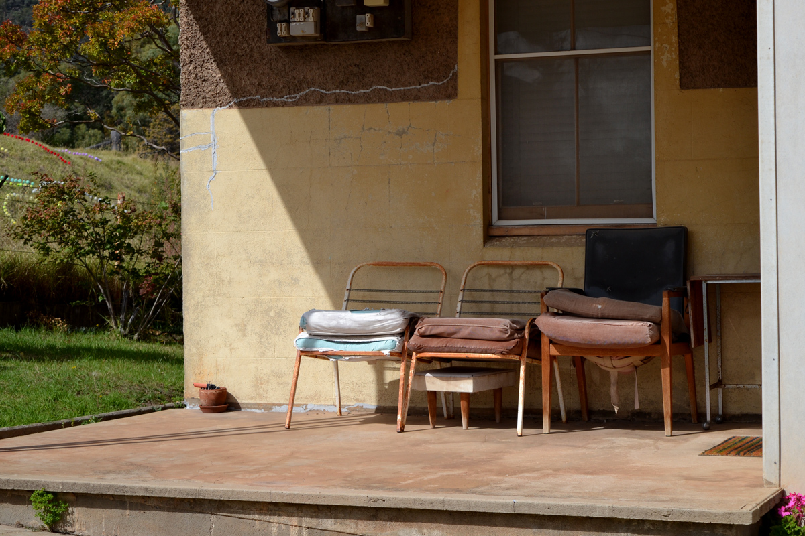

Cementa in Kandos
After 3 hours of driving from Sydney, 20 minutes of detour, 1 expensive speeding fine, I arrived in Kandos for Cementa - a biennial contemporary arts festival.
Contemporary art isn't about demonstrating technical mastery (although it could be). It's a medium to gain a new perspective on the world. Cementa has successfully faciliated this. The wide range of artworks explored diverse issues raging from current affairs to examining human emotions.

My favourite artwork from the festival. The artist made these colourful pompoms to deal with her partner’s cancer and death.
 Rusting church bell.
Rusting church bell.
 Performance art or just a crazy person – I wasn't sure.
Performance art or just a crazy person – I wasn't sure.
 Protest against coal mining in regional NSW.
Protest against coal mining in regional NSW.
 Beautiful view of Kandos.
Beautiful view of Kandos.
See you again in two years Kandos – it feels like you'll be there unchanged.